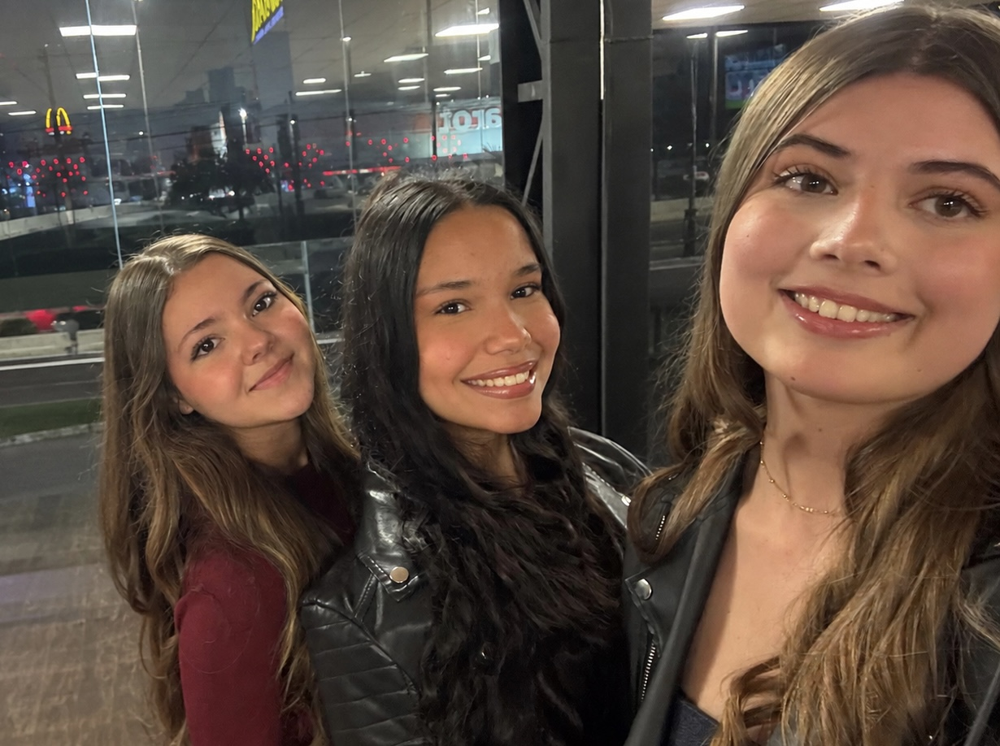
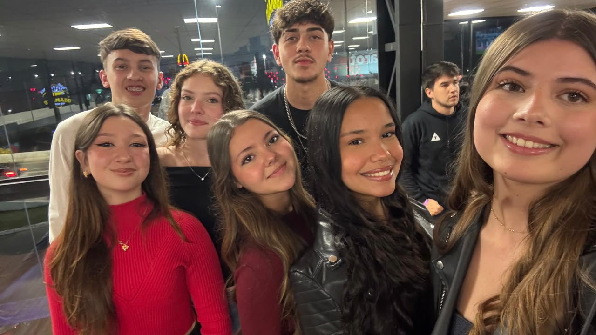
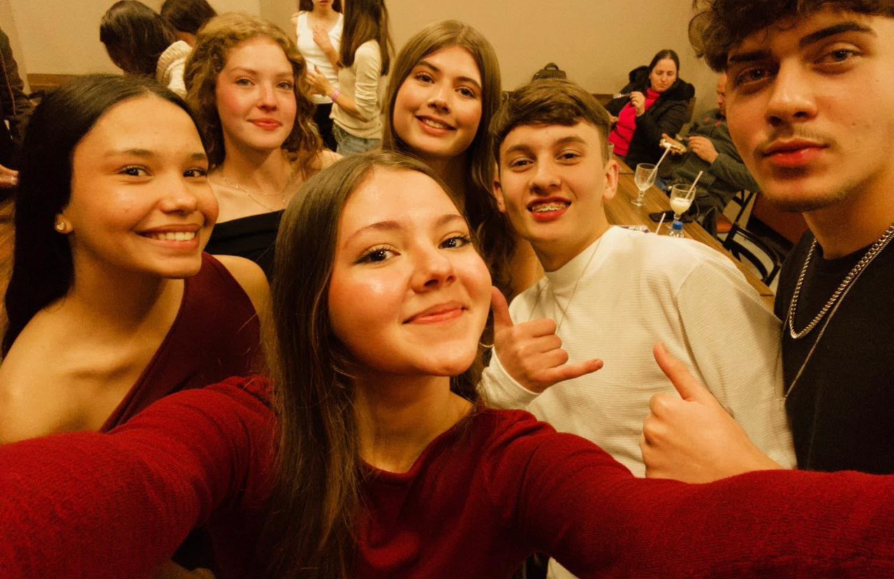
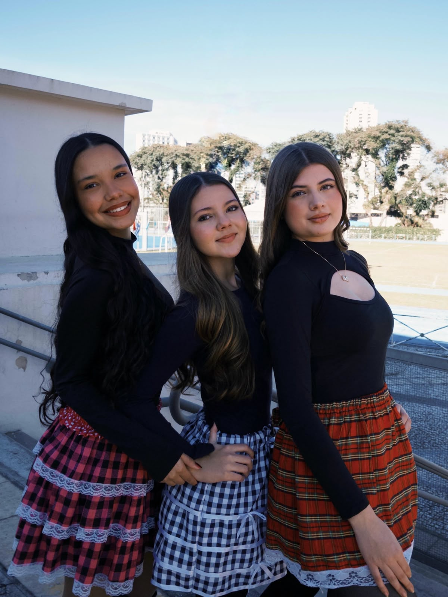
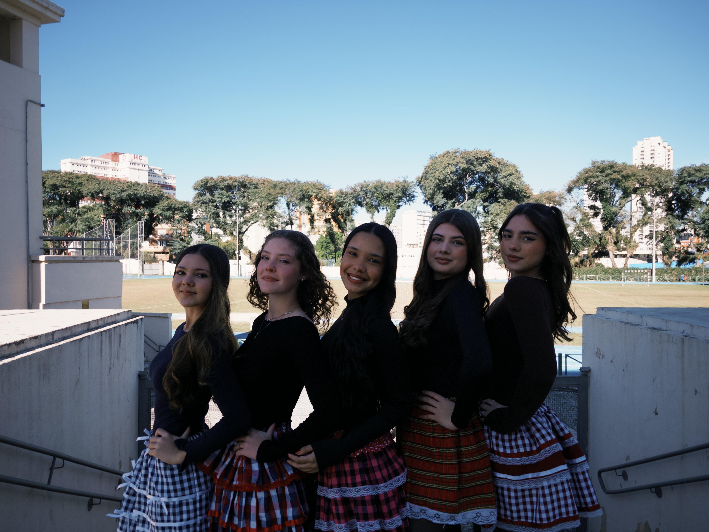
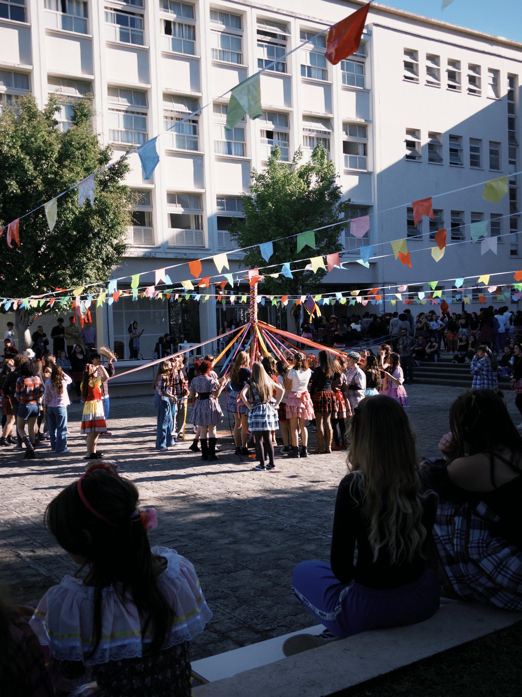
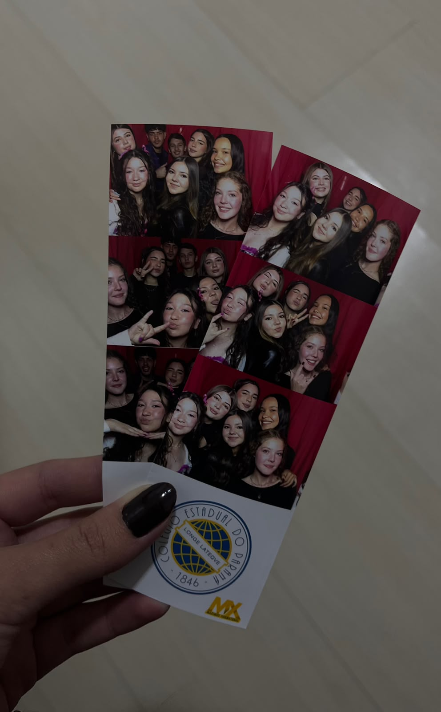
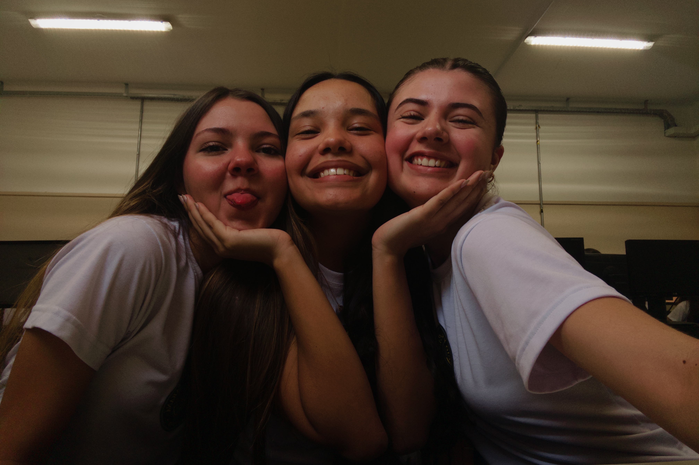

30 de maio de 2026, aniversário da Camila.
Quando passei no CEP, tinha muito medo de não conseguir fazer amigos, de não encontrar pessoas que me entendessem ou simplesmente gostassem de mim. Mas Deus foi muito generoso comigo e colocou vocês no meu caminho. Além de vocês duas, ainda temos nosso grupo, que faz cada dia ser mais leve, mais engraçado e mais especial. Cada conversa, cada risada, cada intervalo e cada momento juntos virou uma lembrança que eu vou guardar com muito carinho. Sou imensamente grata a Deus por ter encontrado as melhores amizades que eu poderia pedir. Obrigada por estarem comigo, por fazerem parte da minha vida e por transformarem um medo que eu tinha em uma das maiores bênçãos que eu já recebi. Amo muito vocês e espero que essa seja só a primeira de muitas fotos e memórias que ainda vamos construir juntas. 🤍
by carol



9 de julho de 2026, festa julina
Muitas vezes nós nos preocupamos tanto com as coisas que podem dar errado, que esquecemos de viver as coisas que estão dando certo. E, olhando para trás, percebo o quanto Deus foi bom comigo. Carol e Camila, talvez vocês nunca entendam o quanto uma amizade tao inesperada que o colégio me deu, significa para mim. Na festa junina, pude enxergar como tem sido maravilhoso compartilhar a vida com pessoas tao especiais. Nós tentando aprender as danças, cantando a letra errada das músicas e rindo sem se preocupar com o que vem depois. Crescer assusta, mas saber que vivo tudo isso com vocês, faz valer a pena. Que privilegio é viver esse sonho! 💓
by bruna




18 de agosto de 2026, aula de educação digital
As vezes paro pra pensar no quanto Deus foi bom comigo, sempre foi um sonho estudar no CEP, e hoje poder viver tudo isso com as amizades que eu fiz e com as memórias que eu guardo é a realização de um sonho
by camila